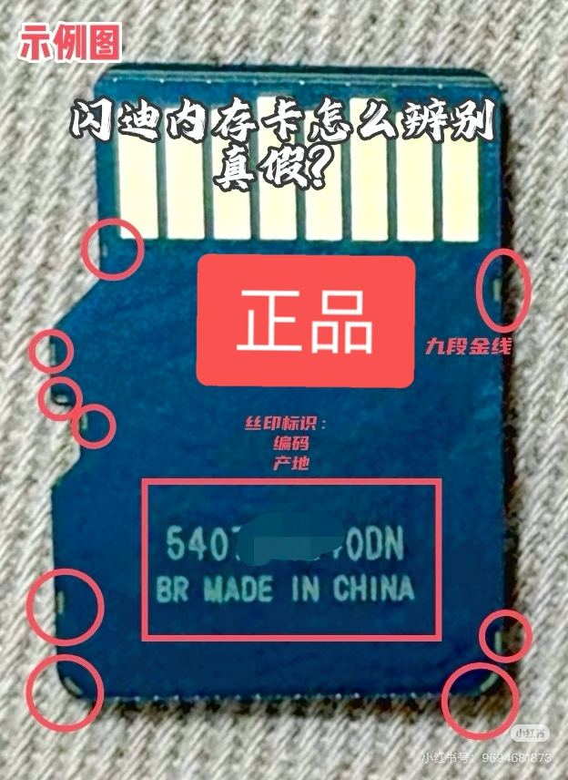
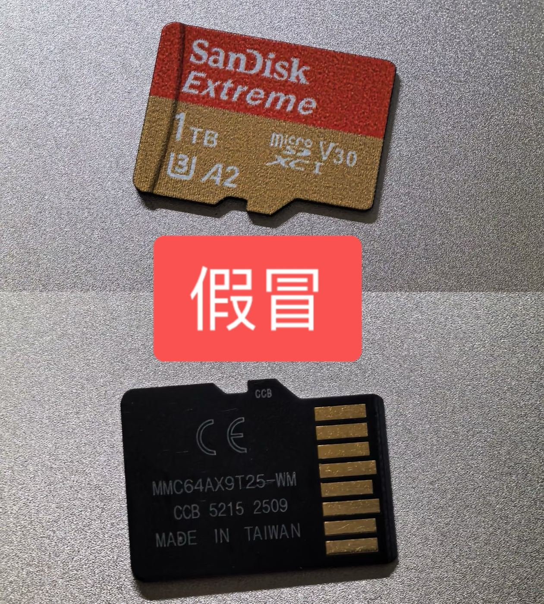
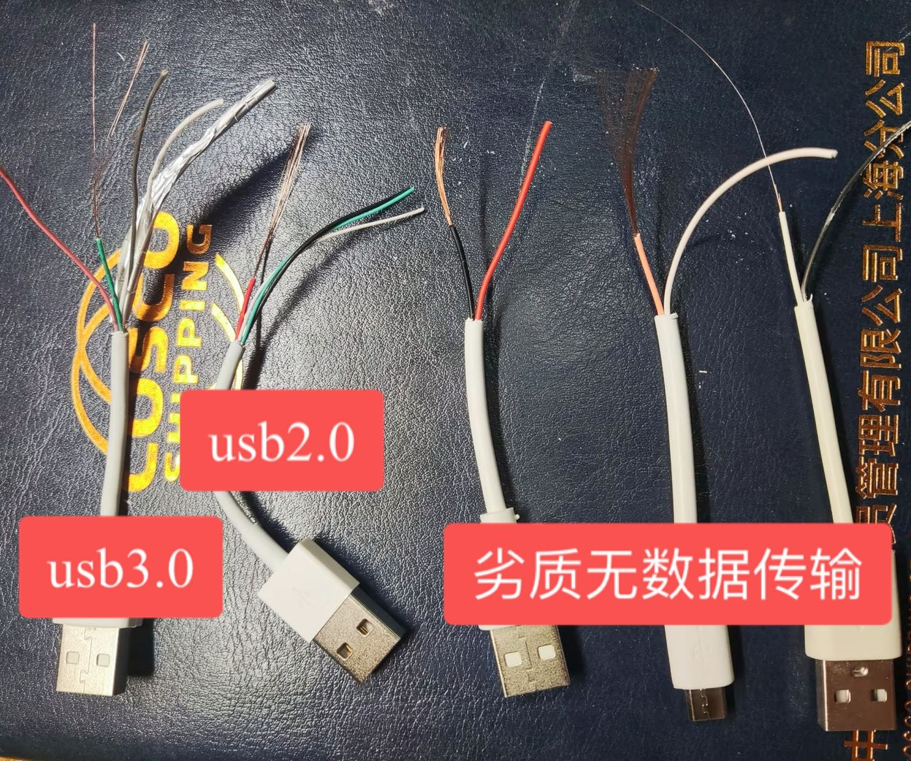
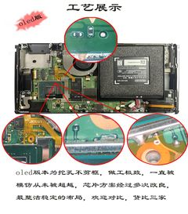
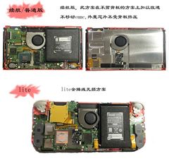

入坑指南
新手必看！了解大气层，准备入坑
什么是大气层？
大气层（Atmosphere）是一款开源的Nintendo Switch自制系统固件，是目前最流行、最稳定的Switch破解方案。
它允许你在Switch上运行自制软件、游戏备份、模拟器等，同时保持原机系统的完整性。
为什么选择大气层？
- 免费开源 - 完全免费，代码公开透明
- 安全稳定 - 支持虚拟系统(EMUMMC)，不影响原机
- 功能强大 - 支持游戏备份、金手指、主题、插件等
- 持续更新 - 开发者活跃，及时跟进系统版本
- 社区支持 - 大量教程和插件资源
入坑前需要了解的风险
⚠️ 重要提示
- 需要抛开你的信仰，接受新的概念
- 在别人的操作下，操作不当可能会导致机器变砖，但手机仔永远不会
- 请支持正版游戏，破解仅供学习研究
- 部分新游戏可能需要更新大气层版本和系统固件版本
你需要准备什么？
硬件准备
- Switch主机 - 须在正版系统上正常运作及充电的Switch主机
- 内存卡 - 建议128GB或更大（游戏较大），用于安装大气层的文件系统及游戏
- 电脑 - Windows/Mac均可
- USB数据线(建议使用3.0的USB-C到USB-A) - 用于连接Switch和电脑
- 读卡器（可选，不适用于安装游戏，仅用于救黑砖） - 用于将文件写入内存卡
- 投屏电视(知识盲点提示) - 改机不会影响或增加投屏功能，无论投屏时还是充电需要用原装充电器
内存卡以及数据线真伪分辨
市面上有很多假冒的内存卡和伪劣的数据线，使用这些产品可能会导致无法制作大气层及数据丢失或传输不稳定。以下是一些辨别真伪的方法：
闪迪内存卡真伪辨别
- 包装检查 - 正品包装印刷清晰，防伪标签完整，防伪标为九段金属蚀刻，没有或不是金属蚀刻的则为假
- 产地 - 正品产地为中国china，马来西亚malaysia，，台湾taiwan或别的则为假
- 外观细节 - 正品做工精细，字迹清晰


内存卡真伪辨别示意图
数据线伪劣辨别
- 是否具备数据传输功能 - 市面上很多便宜的线(内部只2线芯)不具备数据传输功能，USB 2.0（内部4线芯），USB 3.0(内部9线芯)，所以USB 3.0一定可以传输数据(华为的线不行)

数据线伪劣辨别示意图（点击图片可放大查看）
微修Switch机型工艺说明
| 机型 | 图片展示 | 工艺说明 |
|---|---|---|
| OLED |  |
工艺难度：⭐⭐⭐⭐ 困难 芯片类型：订制版树莓派rp2040 焊接要求：贴吧首创，不剪框，精准挖孔，C点无飞线 |
| 续航版 普通版 Lite |
 |
工艺难度：⭐⭐⭐⭐ 困难 芯片类型：订制版树莓派rp2040 焊接要求：贴吧首创，不剪框，不移动EMMC，无损方案 |
点击图片可放大查看
为什么选择微修通讯？独家仅有
硬件技术水平
- 焊接能力 - 有直播，有最细节的返图
- 线路板检测 - 有资深的线路板检测维修能力，能够快速定位问题
- 芯片级维修 - 各种掌机，PC，内存颗粒更换
- 较同行水平 - 修复无数次同行翻车的记录
软件技术水平
- 略懂各种计算机语言 - 能够应付你所有的软件问题
- 熟练各种环境搭建 - devkitPro等工具链+编译环境+调试环境，自制系统固件，能够独立完成软件开发
- 自制一站式APP - 提供网络维护，在线更新大气层及系统固件，安装游戏、管理工具、备份存档，金手指、在线主题、在线插件等功能
售后支持
- 更多售后权益 - taobao店比闲鱼更完善售后支持，支持更长的3年改机芯片售后期，兼具更靠谱的线下实体店
准备好了？前往 联系手机仔 开始你的折腾之旅！
常见问题
Q: 破解后还能玩正版游戏吗？
A: 可以！大气层支持双系统，可以在正版系统和破解系统之间切换。
Q: 破解后会被ban吗？
A: 机仔已做了屏蔽真实系统处理，几千群友的测试，都没有被ban过。
Q: 破解系统能连网络吗？能联机吗
A: 可以连WiFi,可以连网络,也可以连私人服务器lanplay，同时还可以进行网络维护，但是不可以连接老任的服务器
Q: 还有别的问题吗？
A: 请直接联系机仔。